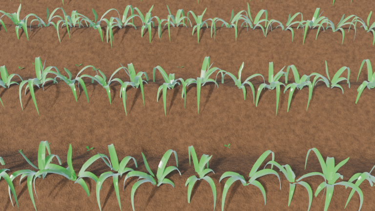
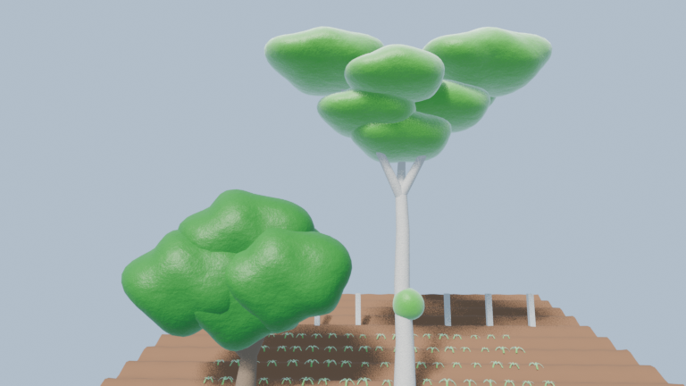

Menggabungkan Agrikultur Presisi, Visualisasi 3D, dan Sistem Komputasi.
Halo, saya Reski. Berfokus pada inovasi budidaya tanaman jagung berimbang, perancangan desain spasial & 3D lanskap menggunakan Blender, serta eksplorasi pemrograman efisiensi tinggi di ekosistem Linux.
Tentang Saya
Saya memiliki ketertarikan mendalam pada titik temu antara dunia pertanian tropis dan teknologi digital. Melalui pendekatan pemodelan 3D dan kalkulasi berimbang, setiap aspek mulai dari pengolahan bedengan tanah, tata letak vegetasi, hingga efisiensi pemupukan hara jagung dapat divisualisasikan dan dihitung secara presisi.
Di sisi teknis, saya aktif mengeksplorasi ekosistem Linux mandiri (Gentoo Linux), komputasi ilmiah dengan Fortran dan Go, serta perancangan visual interaktif yang hemat sumber daya.
Karya & Eksplorasi Proyek
Kombinasi 3D modeling, komputasi ilmiah, dan arsitektur web.

Blender 4.4Visualisasi 3D Kebun Jagung & Bedengan
Pemodelan morfologi tanaman jagung tropis, topografi guludan bedengan tanah, serta sistem tata letak baris tanam untuk perencanaan kebun yang optimal.

3D EnvironmentModeling Vegetasi & Pohon Kebun
Eksplorasi pembuatan aset kanopi pohon, tekstur kulit kayu alami, dan simulasi pencahayaan outdoor alami untuk pendukung aset lanskap pertanian.
AGRO/FORTRAN — Precision Maize & PDE Web Engine
Web server mandiri tanpa framework yang ditulis murni dalam Fortran 2008 dan Go. Mengintegrasikan solver numerik persamaan diferensial (PDE) 2D, kalkulasi fenologi jagung (GDD), dan peramalan kebutuhan pupuk berimbang langsung lewat kernel POSIX socket.
Keahlian & Toolchain
Kalkulator Cepat Pupuk & Hasil Panen
Alat bantu interaktif untuk estimasi kebutuhan pupuk & finansial jagung.
Mari Berdiskusi
Tertarik berkolaborasi seputar agritech, modeling 3D Blender, atau implementasi software? Silakan hubungi saya melalui jalur berikut.